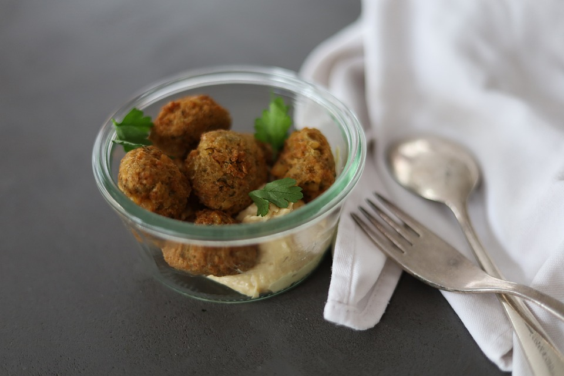
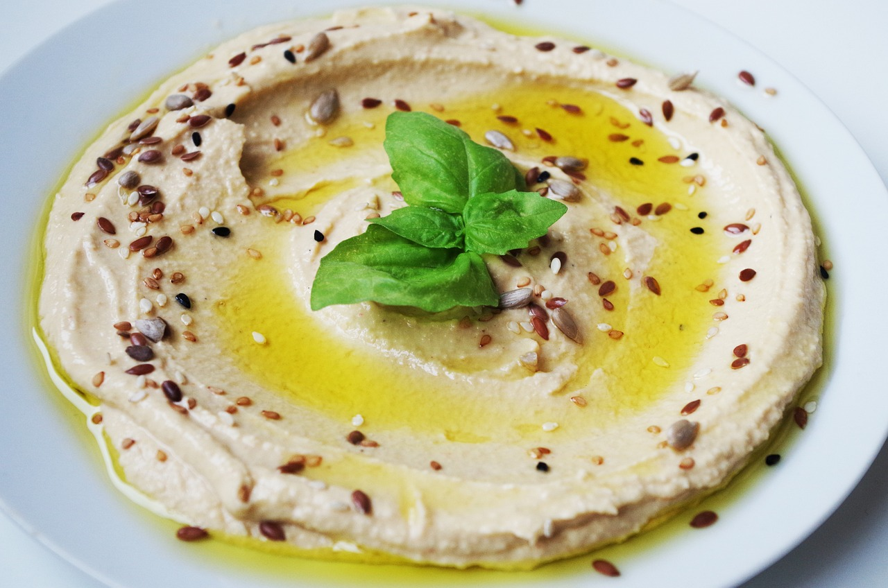
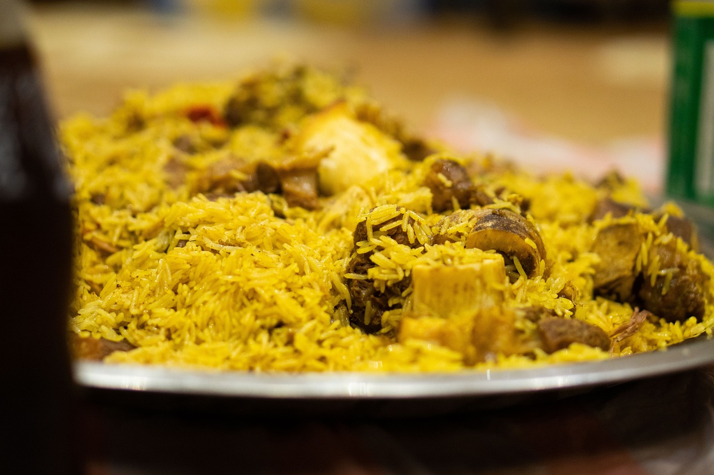
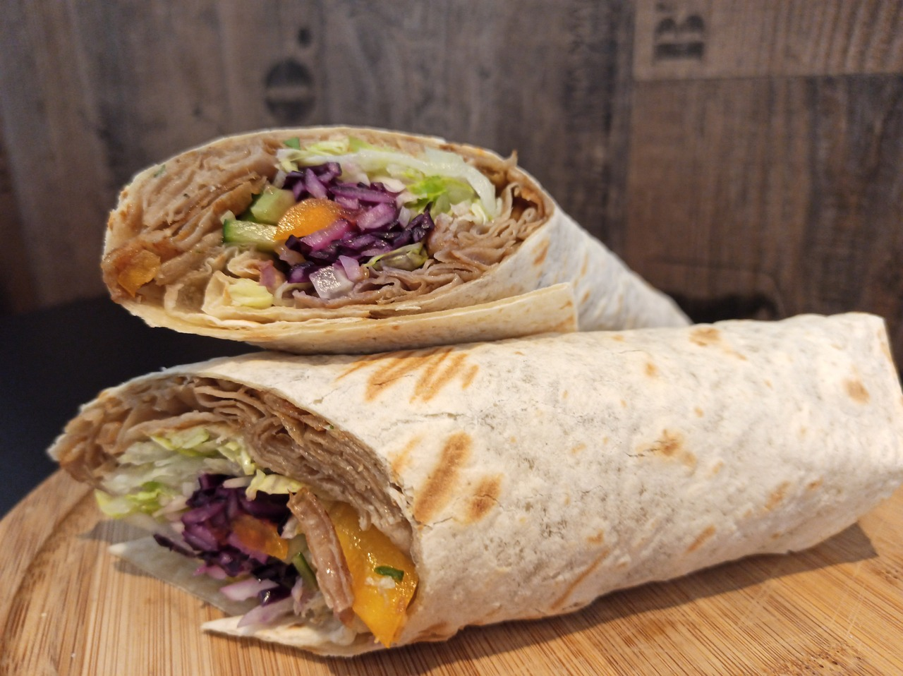

Savoring Saudi Delights: A Gastronomic Journey Through the Kingdom's Iconic Cuisine!
Falafel

If you take a gastronomic tour of Saudi Arabia, you will surely come across falafel, one of the country's most treasured culinary creations. With its delicious combination of crispy outside, tender inside, and fragrant spices, this savory and adaptable meal has won over the hearts and palates of foodies worldwide. Come along as we explore the history, preparation, and allure of falafel.
A Brief History
Falafel originated in the Middle East thousands of years ago, and it has a rich and illustrious history there. Although its precise origins are unknown, falafel is thought to have originated in Egypt and later traveled throughout the Middle East, where it gained popularity as a street snack and eventually became a staple of the cuisine.
The Art of Making Falafel
Fundamentally, falafel is a savory fritter consisting of spices, herbs, and ground chickpeas (or fava beans). After combining the ingredients into a thick paste and seasoning them with pungent spices like garlic, coriander, and cumin, the mixture is formed into little patties or balls. After that, they are deep-fried until the outside is crispy and golden brown while the inside is still soft and fluffy.
The secret to falafel's charm is in the way its flavors and textures are precisely balanced; its crispy outside gives way to a soft, savory center that is brimming with tantalizing spices. Falafel is typically served hot and fresh, and it's often paired with pita bread, hummus, tahini sauce, and fresh veggies to create a harmonic symphony of flavors and sensations.
Varieties of Falafel
Though there are many regional variations and inventive tweaks to try, the traditional falafel is still a perennial favorite. To whet your appetite, try these well-liked varieties:
- Classic Chickpea Falafel: This is the most traditional and well-known type of falafel, made with ground chickpeas, herbs, and spices. With its golden brown hue, crispy outside, and soft, fluffy within, it's little wonder that street food and snacks in Saudi Arabia are so popular.
- Fava Bean Falafel: Falafel made using fava beans as an alternative to chickpeas has a somewhat different flavor and texture in some parts of Saudi Arabia. Compared to its chickpea counterpart, fava bean falafel is typically thicker and earthier, adding a distinctive flavor to this traditional delicacy.
- Spicy Falafel: Spicy falafel is a tempting alternative for anyone who likes a little heat. Every bite of these falafel balls has a scorching taste due to the inclusion of additional spices like chili powder, cayenne pepper, or jalapeños. For those who enjoy spice and want to try something new with their falafel, these are ideal.
- Herb-infused Falafel: Some falafel recipes use a range of fresh herbs, including mint, cilantro, and parsley, in the mixture to give it a bright green hue and a flavorful, fresh herbal kick. For individuals looking for a lighter and more herbaceous falafel experience, herb-infused falafel is a delightful and aromatic twist on the traditional dish.
Savoring the Flavors of Falafel
A trip across Saudi Arabia's cuisine wouldn't be complete without sampling falafel. Flaky, crispy, and full of flavor, falafel tantalizes the senses whether it is eaten as a fulfilling dinner at a neighborhood restaurant, a quick snack from a street seller, or a festive treat during parties and get-togethers.
Thus, make sure to indulge your taste buds with the enchantment of falafel the next time you're in Saudi Arabia. Eating the traditional version or experimenting with creative twists, one thing is certain: your gastronomic adventure will be nothing short of remarkable.
Savor the everlasting allure of falafel and discover the vivid tastes of Saudi Arabia with each mouthwatering morsel.
Hummus

One of Saudi Arabia's most well-liked and adaptable culinary jewels is hummus, which you will discover when embarking on a culinary journey through the country. Foodies all around the world have been enthralled with this rich, creamy dip that combines chickpeas, tahini, garlic, and lemon juice in a delicious way. Come explore the history, preparation, and enticing appeal of hummus.
A Brief History
The Middle Eastern dish hummus has a long history, having originated in ancient Egypt centuries ago. The first recorded hummus recipes are from the 13th century, a time when people were enjoying this easy and wholesome staple dish. With time, hummus expanded throughout the Middle East and beyond, earning a devoted following thanks to its delectable flavor and adaptability.
The Art of Making Hummus
Hummus is essentially a smooth and creamy dip made with olive oil, garlic, tahini (sesame paste), mashed chickpeas, and lemon juice. The ingredients are combined to create a creamy, smooth dip that is full of flavor and has a rich, nutty texture.
The allure of hummus is found in its simplicity—basic ingredients are skillfully combined to create a delectable and adaptable culinary marvel. Hummus is typically eaten as a dip with pita bread, but it also tastes great as a spread on sandwiches and wraps, or with fresh veggies and crackers.
Varieties of Hummus
Even though the traditional hummus is still a crowd favorite, there are lots of inventive versions to try. To whet your appetite, try these well-liked varieties:
- Classic Hummus: The original and most popular version of this popular dip is made with chickpeas, tahini, garlic, lemon juice, and olive oil. Its mildly tart flavor, nutty undertones, and creamy texture make it an ideal side dish for many different recipes.
- Roasted Red Pepper Hummus: With the addition of roasted red peppers for a sweet and smokey taste, this unique take on a traditional recipe is sure to please. The dip is made more colorful and lively by the roasted peppers, which give it depth and complexity.
- Spicy Jalapeño Hummus: This is a delicious option for people who like a little heat. This version awakens your taste buds with a spicy kick from the addition of fresh jalapeños to the traditional recipe. For those who enjoy spice and want to give their hummus a bit more oomph, this is ideal.
- Sun-Dried Tomato Hummus: Packed with flavor, this kind of hummus is tangy and flavorful. Sun-dried tomatoes enhance the dip's rich, umami-rich flavor while balancing the creamy texture of the tahini and chickpeas.
Savoring the Flavors of Hummus
A trip across Saudi Arabia's cuisine wouldn't be complete without sampling hummus. Hummus entices the senses with its creamy texture, nutty flavor, and delicate tanginess whether it is consumed as a snack, appetizer, or side dish. Hummus is a unifying factor that brings people together to enjoy the pleasures of delicious food and excellent company, whether they are at family get-togethers or crowded street food vendors.
So make sure to indulge your taste buds with the wonders of hummus the next time you're in Saudi Arabia. Eating the traditional version or experimenting with creative twists, one thing is certain: your gastronomic adventure will be nothing short of remarkable.
Savor the classic appeal of hummus while discovering the vivid tastes of Saudi Arabia with each mouthwatering bite.
Kabsa

When you travel through Saudi Arabia and sample its cuisine, one of the most well-known and beloved meals is kabsa. With its enticing blend of spices, meat, and rice, this aromatic and tasty rice dish has been a mainstay of Saudi Arabian cuisine for decades. It takes diners to the heart of the Arabian Peninsula and thrills the senses. Come explore the history, logistics, and enticing appeal of Kabsa with us.
A Brief History
Kabsa originated in Bedouin culture, where it was customarily made in the Arabian desert by nomadic tribes. This filling dish gained popularity over time as a representation of hospitality and joy, shared by communities and families on special occasions. Kabsa, which reflects the region's rich culinary legacy and cultural customs, is now regarded as Saudi Arabia's national dish.
The Art of Making Kabsa
Kabsa is essentially a fragrant rice dish with soft meat and a mixture of spices and herbs. The first step in the preparation is to marinate the meat, which is usually goat, lamb, or chicken, in a mixture of cardamom, cloves, cinnamon, and bay leaves. After being perfectly seared, the flesh is cooked in a rich broth until it becomes soft and luscious.
As this is going on, long-grain basmati rice is cooked in the same broth and spices, soaking up the flavorful scents and rich flavors to form a fragrant and aromatic base for the dish. To add texture and depth, the cooked rice is piled with the delicate meat and topped with fresh herbs, raisins, and toasted nuts.
Varieties of Kabsa
Though there are many regional variations and inventive tweaks to try, the traditional Kabsa is still a perennial favorite. To whet your appetite, try these well-liked varieties:
- Mandi: Popular throughout the Arabian Peninsula, mandi is a Yemeni-born Kabsa variant. It consists of slow-cooked meat, usually chicken or lamb, marinated in a mixture of spices and cooked on top of fragrant rice. Mandi is a very remarkable eating experience because of the meat, which is juicy and soft and imbued with the tastes of the broth and spices.
- Bukhari: Popular in Saudi Arabia and the Gulf, bukhari is a hearty and comforting take on Kabsa. Tender chunks of beef or lamb are cooked with tomatoes, onions, and aromatic spices. The rice is then simmered until the flavors combine to produce a tasty and rich dish. For further taste depth, bukhari is frequently served with a side of tart tomato sauce or yogurt.
- Kabsa Althadi: A posh take on Kabsa, Kabsa Althadi is created with supple, delicious camel meat that has been marinated in a mixture of spices and cooked slowly. The dish is a popular among daring foodies since the camel meat gives it a distinctive and exotic flavor.
- Seafood Kabsa: For those who enjoy seafood, this version is a lovely mix of fresh seafood, including shrimp, fish, and calamari, cooked with rice and aromatic spices to produce a savory and fragrant dish. Seafood kasha, which lends a sense of refinement and elegance to the eating experience, is frequently consumed on special occasions and during festivities.
Savoring the Flavors of Kabsa
A trip across Saudi Arabia's cuisine wouldn't be complete without sampling kabsa. Kabsa, with its aromatic spices, succulent meat, and fragrant rice, is a feast for the senses that may be savored at a family gathering, a celebratory event, or a typical Saudi restaurant. Kabsa is a social gathering place that unites people to enjoy delicious food and delightful conversation, whether they are in the vibrant streets of Riyadh or the tranquil deserts of the Arabian Peninsula.
Thus, make sure to indulge your taste buds with the charm of Kabsa the next time you're in Saudi Arabia. Eating the traditional version or experimenting with creative twists, one thing is certain: your gastronomic adventure will be nothing short of remarkable.
Savor the mouthwatering flavors of Kabsa and discover Saudi Arabia's rich culinary history, one mouthwatering bite at a time.
Shawarma: A Saudi Arabian Street Food Delight

If you take a gastronomic tour of Saudi Arabia, you will surely come across shawarma, one of the country's most well-known and cherished delicacies. This mouthwatering combination of soft, marinated meat, crunchy veggies, and creamy sauces wrapped in warm, fluffy pita bread has won the hearts and palates of foodies everywhere. It is a fragrant, savory street meal. Come explore the history, preparation, and enticing appeal of Shawarma with us.
A Brief History
The Middle Eastern Levant region is where Shawarma first appeared centuries ago. Greek gyro and Turkish doner kebab are thought to have served as the dish's primary inspirations, with each culture adding its own special twist. Shawarma gained popularity as a street meal and a mainstay of Arabic cooking as it expanded throughout the Middle East and beyond over time.
The Art of Making Shawarma
Fundamentally, Shawarma is a flavorful and tender dish prepared with thinly sliced meat—usually lamb, beef, or chicken—marinated in a mixture of aromatics, spices, and herbs. After that, the marinated meat is placed atop a vertical rotisserie and slowly roasted until it becomes tender and tasty, producing flavorful slices of meat that are moist and aromatic.
When ready to serve, the roasted meat is shaved off the rotisserie and layered with crisp veggies like onions, tomatoes, and lettuce inside a warm, fluffy pita bread. Then, to add depth and richness to each bite, a generous drizzle of creamy tahini sauce, garlic sauce, or yogurt sauce is applied on top of the sandwich.
Varieties of Shawarma
There are many regional varieties and inventive tweaks to try, even though the traditional Shawarma is still a perennial favorite. To whet your appetite, try these well-liked varieties:
- Chicken Shawarma: Perhaps the most well-known version of the cuisine is the chicken Shawarma, which consists of soft, marinated chicken slices that are perfectly grilled on a vertical rotisserie. Shawarma lovers love this chicken because it's tasty, juicy, and has a tinge of smokiness from the roasting process.
- Beef Shawarma: Another well-liked version is the beef Shawarma, which is made with thinly sliced beef that is marinated in a mixture of spices and herbs before being roasted on a rotisserie. Together with the crisp veggies and creamy sauces, the beef's deep and strong flavor complements its soft and succulent texture.
- Lamb Shawarma: This upscale version has soft, marinated lamb slices that are slowly roasted until they are perfectly delicious. Meat aficionados enjoy the lamb because it is savory and thick, with a tinge of sweetness from the marinade.
- Vegetarian Shawarma: This recipe, which includes roasted veggies like bell peppers, eggplant, and zucchini with falafel or grilled halloumi cheese, is a great choice for anyone who would rather consume just plant-based foods. This recipe, which is great for both meat eaters and vegans, is made with aromatic spices and roasted veggies until they are soft.
Savoring the Flavors of Shawarma
Without indulging in the flavors of Shawarma, no trip through Saudi Arabian cuisine could be considered comprehensive. Enjoyed at a lively street food stall, neighborhood eatery, or joyous gathering, Shawarma entices the senses with its aromatic scent, succulent meat, and smooth sauces. From the energetic streets of Riyadh to the lively streets of Jeddah, Shawarma unites people to enjoy the joys of delicious food and wonderful companionship.
So make sure to indulge your taste buds with the wonder of Shawarma the next time you're in Saudi Arabia. Eating the traditional version or experimenting with creative twists, one thing is certain: your gastronomic adventure will be nothing short of remarkable.
Savor the mouthwatering aromas of Shawarma and discover Saudi Arabia's rich culinary history with each mouthful.